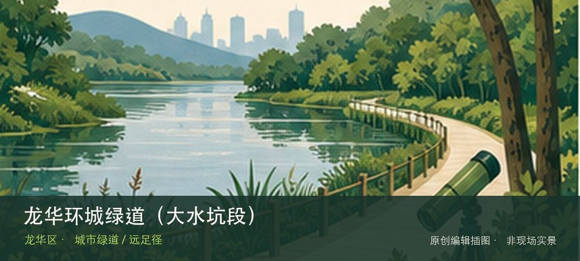

适合谁
适合有基础步行体力、愿意按天气调整路线的人；行动不便者应只选择平缓开放段。

SHENZHEN GUIDE · 236
大水坑社区桔美路至省立绿道5号线 · 城市绿道 / 远足径
龙华环城绿道（大水坑段）位于大水坑社区桔美路至省立绿道5号线，约4.6公里线路通常06:00—21:30开放，以星空夜光步道、湿地花园和林下节点形成轻量段落。先辨认星空夜光步道，再观察湿地花园与云隐之森，两者共同说明这里为何不能被同类地点的泛化标签替代。现场不必追求一次走完，先在星空夜光步道与湿地花园与云隐之森之间确定主线，再按体力、日照和天气保留折返方案。山地、滨水或林下路面会随降雨改变，当天预警和开放边界始终比旧轨迹更优先。
WHY GO
适合有基础步行体力、愿意按天气调整路线的人；行动不便者应只选择平缓开放段。
从桔美路一侧进入，先看星空夜光步道，再按体力续走湿地花园与云隐之森；到预定折返点即原路返回，不越过库区护栏。
公交M226到大水坑社区站，或导航大水坑路65号一带入口；库区护栏外不是游线。
自驾只使用大水坑社区周边正规停车场，停妥后步行到桔美路一侧入口；入口、村道和消防通道不排队候位。
10月至次年4月适合完整走段；夏季优先清晨或傍晚，夜光路段也须在21:30前留足离场时间，雷雨和湿地积水时缩短路线。
NEARBY IDEAS
 编辑配图·非现场实景
编辑配图·非现场实景
龙华环城绿道位于龙华多街道山体与社区，多个分段连接森林、郊野径、水库和居民区，线路名称覆盖范围很大，入口与退出点比里程目标更重要。
 编辑配图·非现场实景
编辑配图·非现场实景
大浪时尚小镇位于大浪服装产业集聚区，品牌总部、设计建筑、展馆和秀场把服装生产升级为时尚产业街区，活动日与普通工作日体验差异明显。
 编辑配图·非现场实景
编辑配图·非现场实景
龙华茜坑绿道位于观澜街道至茜坑老村，约7.02公里郊野绿道沿茜坑水库和荔林展开，兼具轻徒步、骑行与村落水库视野。